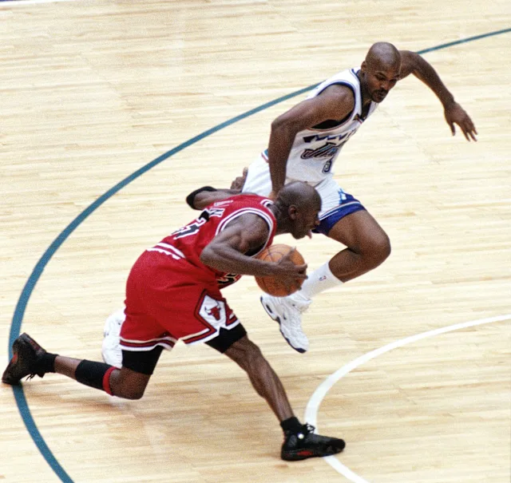
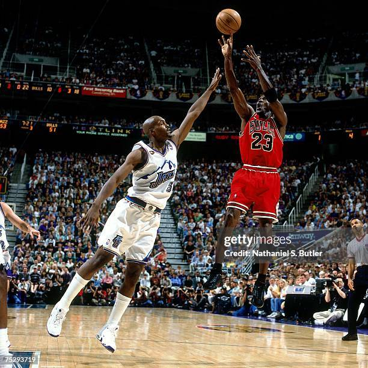
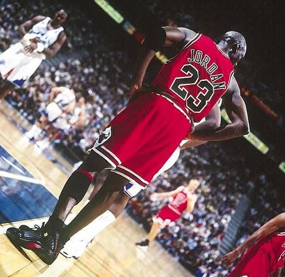

Michael Jordan's famous last shot became one of the most memorable moments
of his career. In Game 6 of the 1998 NBA Finals, the Chicago Bulls faced
the Utah Jazz with the championship on the line. Jordan's final shot gave
the Bulls the lead with seconds remaining and helped secure their sixth
NBA Championship.
With less than a minute remaining, Jordan brought the ball up the court with
the Bulls trailing by one point. He drove towards the basket before pulling
back and creating space from his defender. With the game and championship
hanging in the balance, Jordan calmly rose for a mid-range jump shot from the
top of the key. The shot went through the basket with 5.2 seconds remaining,
putting Chicago ahead 87–86.
Jordan finished Game 6 with 45 points, leading the Bulls in their victory
over the Jazz. The championship completed Chicago's second three-peat and
gave Jordan his sixth NBA title and sixth Finals MVP award.
The moment became an iconic part of Jordan's legacy and is often remembered
as the final shot of his Bulls career. It also marked the end of an era for
the Chicago Bulls, making the image of Jordan's shot one of the most
recognisable moments in NBA history.


